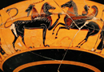
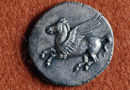

Bellerophon
Another prominent myth involving quests associated with the Argolid, on which I would like to focus, is that of Bellerophon and the flying horse Pegasus. Pegasus is born from the body of Medusa when she is slain (Poseidon is the father of Pegasus), and according to some versions of the Perseus myth, Pegasus is given to Perseus. In other versions, however, he is given to Bellerophon by Poseidon.
Bellerophon is a hero of Corinth, who leaves home after having unintentionally killed his brother. He goes to the city of Tiryns (in the Argolid), where Proetus is king. Proetus wife Stheneboea falls in love with Bellerophon, but when he rejects her, she accuses him of having tried to seduce her (a similar sequence of events is found also in the myth of Hippolytus). In order to punish him, Proetus sends him to his wife’s father Iobates with a sealed letter which asked Iobates to kill Bellerophon. Iobates sends him to perform a series of difficult tasks. He first kills the Chimaera which in front was a lion, in the middle a goat, and in back a serpent. He then defeats the great warriors the Solymi and the Amazons. On his way home from these tasks, he also was ambushed by men arranged by king Iobates, but Bellerophon also killed them.
According to the Greek authors Pindar and Euripides, Poseidon gives Bellerophon Pegasus to help with his tasks. At first he was unable to handle the horse, until Athena appears to him in a dream and gives him a golden bridle (an example, once again, of her role as a civilizing goddess). (see images) He uses Pegasus to complete his tasks, but he then dies by trying to fly too high with the horse: this motif of a mortal punished or harmed for trying to rise beyond his station to the level of the immortals is a particularly common one in the poetry of Pindar, but we seen that such reflection upon mortality is frequent in Classical mythology.
{kind=link}
{kind=link}